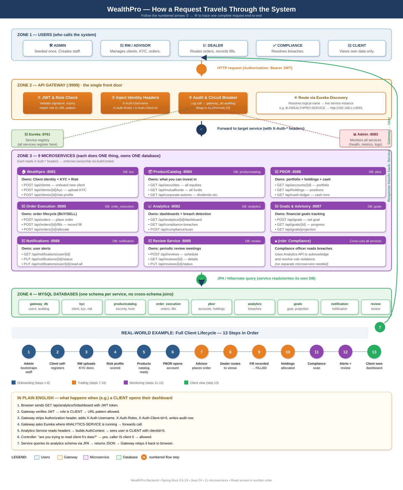
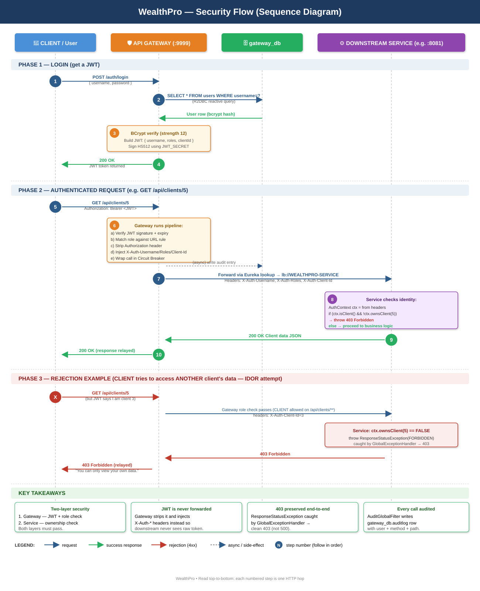

Open this file in your browser. Right-click any diagram → Save Image As for PNG, or use the download buttons for the original SVG.

Shows: client layer → gateway → 9 business microservices → MySQL schemas → observability → 13-act end-to-end client lifecycle.

Shows: login sequence → JWT issuance → authenticated request pipeline → failure/rejection paths → 9 defense-in-depth controls.